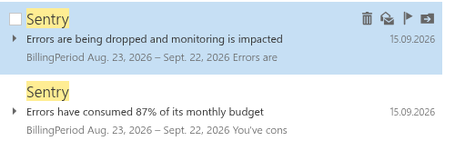

Django fetch modes¶
Django 6.1 was released recently (2026.08.05) and introduced fetch modes support.
My claim in this article is that default options are not useful. But it's very easy to log n+1 query problems.
Syntax is trivial to be added at model level (it SEEMS that could be good to have it on global level, but this could have unforseen side effects on your 10 third party apps and break code in so subtle way that you won't see it easly, example later!)
class BookManager(models.Manager):
def get_queryset(self):
return super().get_queryset().fetch_mode(...)
class Book(models.Model):
...
objects = BookManager()
Two new available modes (as FETCH_ONE represents Django's behaviour before 6.1) seems cool at first, but they are not really.
FETCH_RAISE¶
FETCH_RAISE is in fact killer option, I doubt anybody would dare to use it in production. This is just too much, you WILL end up with 500 errors sooner or later (I would say that it will be sooner, aka next minute after deployment). Basically: "I am 100% sure my app doesn't contain any hidden n+1 bug". Not true, after certain number of features times number of people who work on the project this WILL happen.
Please don't use it, don't detonate your app.
Not to mention that trying to adapt it for certain number of tests seems just not doable unless you spend week adapting them (what for, I don't know, who cares if your tests contain certain n+1 problems).
FETCH_PEERS¶
My problems with FETCH_PEERS are following:
- You are not going to use it on purpose, since you are very good programmer and would use
select_relatedandprefetch_relatedinstead on your own. - Then this means automatically that it will hide some real BUG in your code by definition (or in best case do nothing).
- So, instead of using assert_num_queries (or
assertNumQueriesat your option) in risky places where bug can happen and in general writting good performant code, you are using hack to save you. - Not always this will be best option. If you look on actual implementation, this is in fact
prefetch_related. There are many cases whereselect_relatedwould be more natural and just better. - Even if
prefetch_relatedshould be quite safe to applicate in various places (as django deduplicate fetched objects) I can imagine and am pretty sure in the wild there will be cases where some (buggy as hell at your option) code will break after adding it.
FETCH_ERROR???¶
My own thinking is that I don't like either to detonate my applications nor hide (or silently introduce) bugs so both FETCH_RAISE and FETCH_PEERS are non go.
It's OK for me to flag some problems and I can fix them myself. Logging error or warning – this is the way.
Thanfully, it's super easy to do (as always in Django :)
# fetch_error_manager.py
import inspect
import logging
from typing import Any
from django.conf import settings
from django.db.models import Manager, Model
from django.db.models.fetch_modes import FetchOne
log = logging.getLogger(__name__)
class FetchError(FetchOne):
__slots__ = ()
track_peers = False
def fetch(self, fetcher: Any, instance: Model) -> None:
klass = instance.__class__.__qualname__
field_name = fetcher.field.name
if not settings.TESTING and not self._is_django_admin_call():
log.error("Unexpected fetch of %s.%s.", klass, field_name, stack_info=True)
return super().fetch(fetcher, instance)
def _is_django_admin_call(self) -> bool:
# Walk frame back pointers directly to avoid inspect.stack shadowing issues
frame = inspect.currentframe()
try:
depth = 0
while frame and depth < 20:
module_name = frame.f_globals.get("__name__", "")
if module_name.startswith("django.contrib.admin"):
return True
frame = frame.f_back
depth += 1
finally:
del frame # Avoid reference cycle retention
return False
def __reduce__(self):
return "FETCH_ERROR"
FETCH_ERROR = FetchError()
class FetchErrorManager(Manager):
def get_queryset(self):
return super().get_queryset().fetch_mode(FETCH_ERROR)
It can be simple file near to settings.py. Then, FetchErrorManager is to be used as custom manager for each model:
...
from tribal_wars_planer.fetch_error_manager import FetchErrorManager
...
class Outline(models.Model):
...
objects = FetchErrorManager()
...
The result? Every n+1 is logged (in my case, at error level, in code above – warning). The quite long stack trace is probably something not to be avoided, but maybe it is possible to further improve the FetchErrorManager. In any case it is clear that line that triggered the additional database query is:
File "/home/rafsaf/projects/Tribal-Wars-Planer/base/views/outline.py", line 270, in outline_detail
if instance.world.postfix == "Test":
Full log:
2026-09-18 17:53:57,180 [ERROR] tribal_wars_planer.fetch_error_manager: Unexpected fetch of Outline.world.
Stack (most recent call last):
File "/home/rafsaf/.local/share/uv/python/cpython-3.14.0-linux-x86_64-gnu/lib/python3.14/threading.py", line 1043, in _bootstrap
self._bootstrap_inner()
File "/home/rafsaf/.local/share/uv/python/cpython-3.14.0-linux-x86_64-gnu/lib/python3.14/threading.py", line 1081, in _bootstrap_inner
self._context.run(self.run)
File "/home/rafsaf/.local/share/uv/python/cpython-3.14.0-linux-x86_64-gnu/lib/python3.14/threading.py", line 1023, in run
self._target(*self._args, **self._kwargs)
File "/home/rafsaf/.local/share/uv/python/cpython-3.14.0-linux-x86_64-gnu/lib/python3.14/socketserver.py", line 697, in process_request_thread
self.finish_request(request, client_address)
File "/home/rafsaf/.local/share/uv/python/cpython-3.14.0-linux-x86_64-gnu/lib/python3.14/socketserver.py", line 362, in finish_request
self.RequestHandlerClass(request, client_address, self)
File "/home/rafsaf/.local/share/uv/python/cpython-3.14.0-linux-x86_64-gnu/lib/python3.14/socketserver.py", line 766, in __init__
self.handle()
File "/home/rafsaf/projects/Tribal-Wars-Planer/.venv/lib/python3.14/site-packages/django/core/servers/basehttp.py", line 221, in handle
self.handle_one_request()
File "/home/rafsaf/projects/Tribal-Wars-Planer/.venv/lib/python3.14/site-packages/django/core/servers/basehttp.py", line 248, in handle_one_request
handler.run(self.server.get_app())
File "/home/rafsaf/.local/share/uv/python/cpython-3.14.0-linux-x86_64-gnu/lib/python3.14/wsgiref/handlers.py", line 137, in run
self.result = application(self.environ, self.start_response)
File "/home/rafsaf/projects/Tribal-Wars-Planer/.venv/lib/python3.14/site-packages/django/contrib/staticfiles/handlers.py", line 80, in __call__
return self.application(environ, start_response)
File "/home/rafsaf/projects/Tribal-Wars-Planer/.venv/lib/python3.14/site-packages/django/core/handlers/wsgi.py", line 124, in __call__
response = self.get_response(request)
File "/home/rafsaf/projects/Tribal-Wars-Planer/.venv/lib/python3.14/site-packages/django/core/handlers/base.py", line 142, in get_response
response = self._middleware_chain(request)
File "/home/rafsaf/projects/Tribal-Wars-Planer/.venv/lib/python3.14/site-packages/django/core/handlers/exception.py", line 56, in inner
response = get_response(request)
File "/home/rafsaf/projects/Tribal-Wars-Planer/.venv/lib/python3.14/site-packages/debug_toolbar/middleware.py", line 152, in __call__
response = toolbar.process_request(request)
File "/home/rafsaf/projects/Tribal-Wars-Planer/.venv/lib/python3.14/site-packages/debug_toolbar/panels/__init__.py", line 247, in process_request
return self.get_response(request)
File "/home/rafsaf/projects/Tribal-Wars-Planer/.venv/lib/python3.14/site-packages/debug_toolbar/panels/__init__.py", line 247, in process_request
return self.get_response(request)
File "/home/rafsaf/projects/Tribal-Wars-Planer/.venv/lib/python3.14/site-packages/debug_toolbar/panels/timer.py", line 72, in process_request
return super().process_request(request)
File "/home/rafsaf/projects/Tribal-Wars-Planer/.venv/lib/python3.14/site-packages/debug_toolbar/panels/__init__.py", line 247, in process_request
return self.get_response(request)
File "/home/rafsaf/projects/Tribal-Wars-Planer/.venv/lib/python3.14/site-packages/debug_toolbar/panels/__init__.py", line 247, in process_request
return self.get_response(request)
File "/home/rafsaf/projects/Tribal-Wars-Planer/.venv/lib/python3.14/site-packages/debug_toolbar/panels/headers.py", line 49, in process_request
return super().process_request(request)
File "/home/rafsaf/projects/Tribal-Wars-Planer/.venv/lib/python3.14/site-packages/debug_toolbar/panels/__init__.py", line 247, in process_request
return self.get_response(request)
File "/home/rafsaf/projects/Tribal-Wars-Planer/.venv/lib/python3.14/site-packages/debug_toolbar/panels/__init__.py", line 247, in process_request
return self.get_response(request)
File "/home/rafsaf/projects/Tribal-Wars-Planer/.venv/lib/python3.14/site-packages/debug_toolbar/panels/__init__.py", line 247, in process_request
return self.get_response(request)
[Previous line repeated 7 more times]
File "/home/rafsaf/projects/Tribal-Wars-Planer/.venv/lib/python3.14/site-packages/django/core/handlers/exception.py", line 56, in inner
response = get_response(request)
File "/home/rafsaf/projects/Tribal-Wars-Planer/tribal_wars_planer/middlewares.py", line 38, in middleware
response = get_response(request)
File "/home/rafsaf/projects/Tribal-Wars-Planer/.venv/lib/python3.14/site-packages/django/core/handlers/exception.py", line 56, in inner
response = get_response(request)
File "/home/rafsaf/projects/Tribal-Wars-Planer/.venv/lib/python3.14/site-packages/django/utils/deprecation.py", line 441, in __call__
response = response or self.get_response(request)
File "/home/rafsaf/projects/Tribal-Wars-Planer/.venv/lib/python3.14/site-packages/django/core/handlers/exception.py", line 56, in inner
response = get_response(request)
File "/home/rafsaf/projects/Tribal-Wars-Planer/.venv/lib/python3.14/site-packages/django/utils/deprecation.py", line 441, in __call__
response = response or self.get_response(request)
File "/home/rafsaf/projects/Tribal-Wars-Planer/.venv/lib/python3.14/site-packages/django/core/handlers/exception.py", line 56, in inner
response = get_response(request)
File "/home/rafsaf/projects/Tribal-Wars-Planer/.venv/lib/python3.14/site-packages/django/utils/deprecation.py", line 441, in __call__
response = response or self.get_response(request)
File "/home/rafsaf/projects/Tribal-Wars-Planer/.venv/lib/python3.14/site-packages/django/core/handlers/exception.py", line 56, in inner
response = get_response(request)
File "/home/rafsaf/projects/Tribal-Wars-Planer/.venv/lib/python3.14/site-packages/django/utils/deprecation.py", line 441, in __call__
response = response or self.get_response(request)
File "/home/rafsaf/projects/Tribal-Wars-Planer/.venv/lib/python3.14/site-packages/django/core/handlers/exception.py", line 56, in inner
response = get_response(request)
File "/home/rafsaf/projects/Tribal-Wars-Planer/.venv/lib/python3.14/site-packages/django/utils/deprecation.py", line 441, in __call__
response = response or self.get_response(request)
File "/home/rafsaf/projects/Tribal-Wars-Planer/.venv/lib/python3.14/site-packages/django/core/handlers/exception.py", line 56, in inner
response = get_response(request)
File "/home/rafsaf/projects/Tribal-Wars-Planer/.venv/lib/python3.14/site-packages/django/utils/deprecation.py", line 441, in __call__
response = response or self.get_response(request)
File "/home/rafsaf/projects/Tribal-Wars-Planer/.venv/lib/python3.14/site-packages/django/core/handlers/exception.py", line 56, in inner
response = get_response(request)
File "/home/rafsaf/projects/Tribal-Wars-Planer/.venv/lib/python3.14/site-packages/django_otp/middleware.py", line 44, in __call__
return self.get_response(request)
File "/home/rafsaf/projects/Tribal-Wars-Planer/.venv/lib/python3.14/site-packages/django/core/handlers/exception.py", line 56, in inner
response = get_response(request)
File "/home/rafsaf/projects/Tribal-Wars-Planer/.venv/lib/python3.14/site-packages/django/utils/deprecation.py", line 441, in __call__
response = response or self.get_response(request)
File "/home/rafsaf/projects/Tribal-Wars-Planer/.venv/lib/python3.14/site-packages/django/core/handlers/exception.py", line 56, in inner
response = get_response(request)
File "/home/rafsaf/projects/Tribal-Wars-Planer/.venv/lib/python3.14/site-packages/django/utils/deprecation.py", line 441, in __call__
response = response or self.get_response(request)
File "/home/rafsaf/projects/Tribal-Wars-Planer/.venv/lib/python3.14/site-packages/django/core/handlers/exception.py", line 56, in inner
response = get_response(request)
File "/home/rafsaf/projects/Tribal-Wars-Planer/tribal_wars_planer/middlewares.py", line 95, in middleware
response = get_response(request)
File "/home/rafsaf/projects/Tribal-Wars-Planer/.venv/lib/python3.14/site-packages/django/core/handlers/exception.py", line 56, in inner
response = get_response(request)
File "/home/rafsaf/projects/Tribal-Wars-Planer/tribal_wars_planer/middlewares.py", line 54, in middleware
response: HttpResponse = get_response(request)
File "/home/rafsaf/projects/Tribal-Wars-Planer/.venv/lib/python3.14/site-packages/django/core/handlers/exception.py", line 56, in inner
response = get_response(request)
File "/home/rafsaf/projects/Tribal-Wars-Planer/.venv/lib/python3.14/site-packages/django/core/handlers/base.py", line 199, in _get_response
response = wrapped_callback(request, *callback_args, **callback_kwargs)
File "/home/rafsaf/projects/Tribal-Wars-Planer/.venv/lib/python3.14/site-packages/django/contrib/auth/decorators.py", line 60, in _view_wrapper
return view_func(request, *args, **kwargs)
File "/home/rafsaf/projects/Tribal-Wars-Planer/base/views/outline.py", line 270, in outline_detail
if instance.world.postfix == "Test":
File "/home/rafsaf/projects/Tribal-Wars-Planer/.venv/lib/python3.14/site-packages/django/db/models/fields/related_descriptors.py", line 267, in __get__
instance._state.fetch_mode.fetch(self, instance)
File "/home/rafsaf/projects/Tribal-Wars-Planer/tribal_wars_planer/fetch_error_manager.py", line 22, in fetch
log.error("Unexpected fetch of %s.%s.", klass, field_name, stack_info=True)
Disclaimer 1 – errors flood¶
Dislaimer: it is possible to flood your error/log systems with enough traffic. It is probably not a good idea to launch such code as above when it is possible to get 1000 errors per second. In my case it took few hours to reach the free tier sentry limit.
Be warned.

Diclaimer 2 – be careful fixing n+1¶
Here is permalink if you need more context, but it's simple endpoint that deletes Target object with related children called WeightModel that have FK to model WeightMaximum. It's real code, written by my jounger self years ago. It is as it is, works fine (well, unless you remove n+1 problem in naive way!).
@api_view(["DELETE"])
@permission_classes([IsAuthenticated])
def delete_target(request: Request):
"""
For given target id, delete obj.
"""
req = TargetDeleteSerializer(data=request.data) # type: ignore
if req.is_valid():
target: TargetVertex = get_object_or_404(
TargetVertex.objects.select_related("outline"),
pk=req.data.get("target_id"),
outline__owner=request.user,
)
with transaction.atomic():
weights = WeightModel.objects.filter(target=target)
# deletes weights related to this target and updates weight state
weight_model: WeightModel
for weight_model in weights:
state: WeightMaximum = weight_model.state
state.off_left += weight_model.off
state.off_state -= weight_model.off
state.nobleman_left += weight_model.nobleman
state.nobleman_state -= weight_model.nobleman
state.catapult_left += weight_model.catapult
state.catapult_state -= weight_model.catapult
state.save()
weights.delete()
target.delete()
return Response(status=status.HTTP_204_NO_CONTENT)
return Response(req.errors, status=status.HTTP_400_BAD_REQUEST)
It has 2x query per loop iteration – weight_model.state will fetch related model and state.save() save it after update. My first thought was that maybe I can live with additional save() as those targets has usually up to dozen children and users ralely use this endpoint (not going to go into the details here as it will be boring). Let's simply add select_related:
with transaction.atomic():
- weights = WeightModel.objects.filter(target=target)
+ weights = WeightModel.objects.filter(target=target).select_related("state")
# deletes weights related to this target and updates weight state
weight_model: WeightModel
for weight_model in weights:
state: WeightMaximum = weight_model.state
state.off_left += weight_model.off
state.off_state -= weight_model.off
state.nobleman_left += weight_model.nobleman
state.nobleman_state -= weight_model.nobleman
state.catapult_left += weight_model.catapult
state.catapult_state -= weight_model.catapult
state.save()
Do you see the bug? The proof is left as an exercise for the reader. Hint after image of cloister taken in Italy.

Chiostro Normanno of Lipary, Italy (private gallery)
Each weight_model modify state parent. If state is the very same parent for two different weight_model, then because they are different model, state will be overriden. In fact n+1 is a reason that this piece of code is working at all.
Last updated: 2026-10-19
Content license: CC BY-NC 4.0 — share and adapt with attribution, no commercial use.